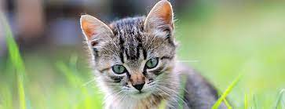

<!-- 
    stwórz stronę HTML z tagiem div
    używając JS dodaj niebieski paragraf do powyższego taga
    dodaj zdjęcie, które wyświetli alert po kliknięciu
    zmień zdarzenie (event) przypisany do zdjęcia, tak żeby dodawało ono fioletowy paragraf do taga div za każdym razem kiedy kursor przejeżdza nad zdjęciem
 -->

<html>

<head>
    <title>Zadanie 4</title>
    <script>
        function alertDoZdjecia() {
            alert("To jest alert do zdjęcia");
        }

        function stworzFioletowyParagraf() {
            var mojDiv = document.querySelector("div");
            mojDiv.innerHTML = "<p style='background-color:purple;'>To jest paragraf</p>";
        }
    </script>

</head>

<body>
    <div>

    </div>
    <!--  -->
    
    <script>

        var mojDiv = document.querySelector("div");
        mojDiv.innerHTML = "<p style='background-color:blue;'>To jest paragraf</p>";
    </script>
</body>

</html>